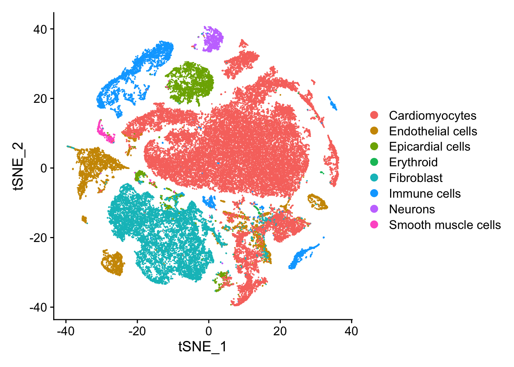
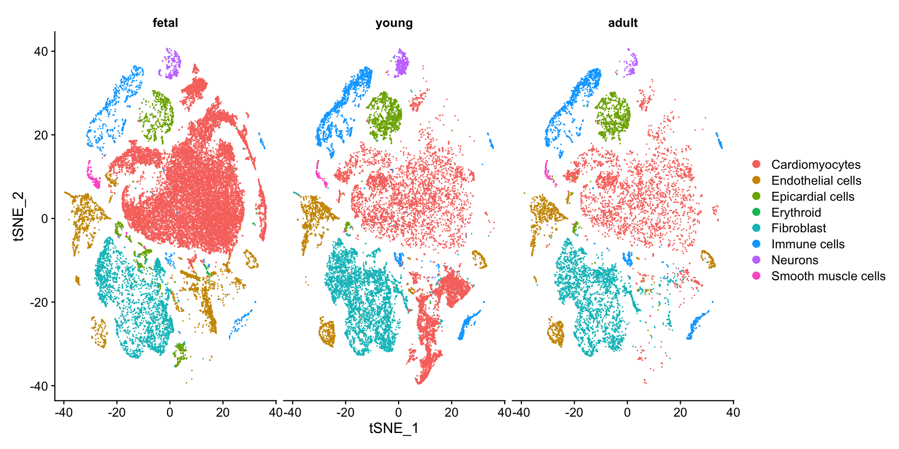
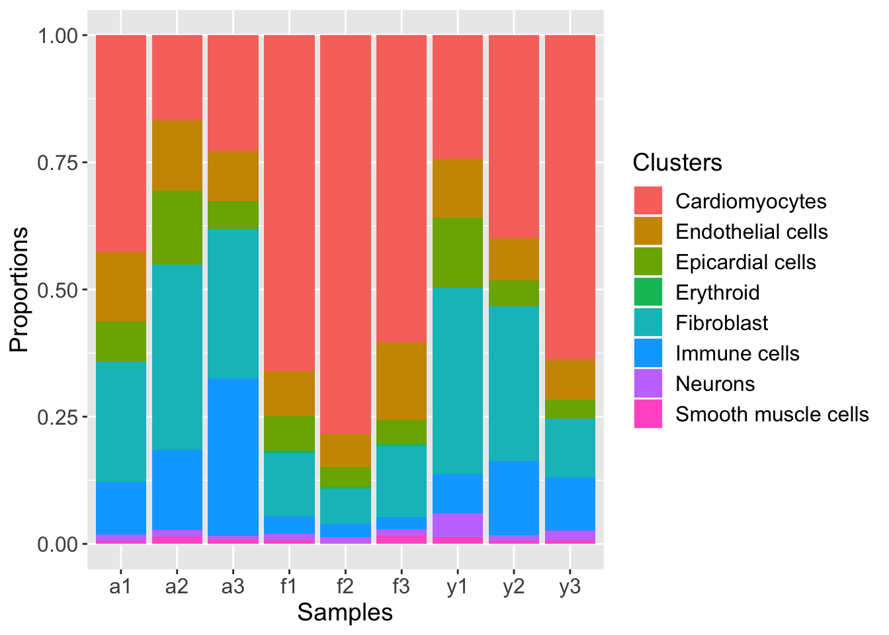
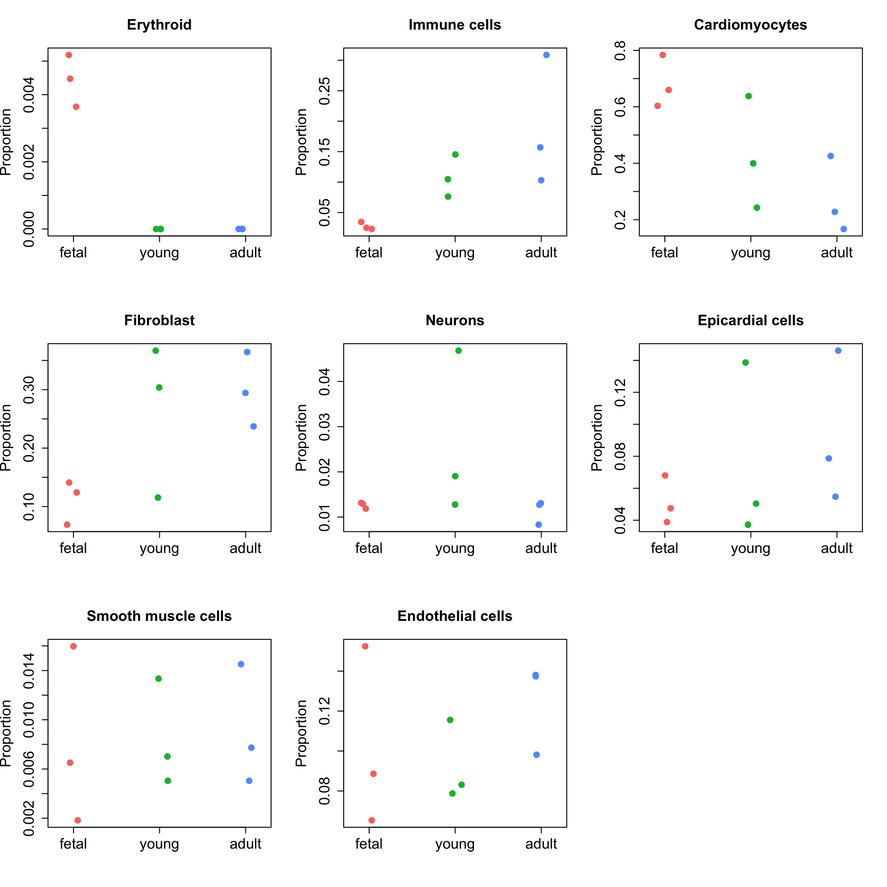

Cell type composition analysis
Belinda Phipson
10/02/2021
Last updated: 2021-02-10
Checks: 6 1
Knit directory: Human_Development_snRNAseq/
This reproducible R Markdown analysis was created with workflowr (version 1.6.2). The Checks tab describes the reproducibility checks that were applied when the results were created. The Past versions tab lists the development history.
The R Markdown is untracked by Git. To know which version of the R Markdown file created these results, you’ll want to first commit it to the Git repo. If you’re still working on the analysis, you can ignore this warning. When you’re finished, you can run wflow_publish to commit the R Markdown file and build the HTML.
Great job! The global environment was empty. Objects defined in the global environment can affect the analysis in your R Markdown file in unknown ways. For reproduciblity it’s best to always run the code in an empty environment.
The command set.seed(20200812) was run prior to running the code in the R Markdown file. Setting a seed ensures that any results that rely on randomness, e.g. subsampling or permutations, are reproducible.
Great job! Recording the operating system, R version, and package versions is critical for reproducibility.
Nice! There were no cached chunks for this analysis, so you can be confident that you successfully produced the results during this run.
Great job! Using relative paths to the files within your workflowr project makes it easier to run your code on other machines.
Great! You are using Git for version control. Tracking code development and connecting the code version to the results is critical for reproducibility.
The results in this page were generated with repository version edeac21. See the Past versions tab to see a history of the changes made to the R Markdown and HTML files.
Note that you need to be careful to ensure that all relevant files for the analysis have been committed to Git prior to generating the results (you can use wflow_publish or wflow_git_commit). workflowr only checks the R Markdown file, but you know if there are other scripts or data files that it depends on. Below is the status of the Git repository when the results were generated:
Ignored files:
Ignored: .Rhistory
Ignored: .Rproj.user/
Ignored: data/.DS_Store
Untracked files:
Untracked: analysis/06a-DAanalysis.Rmd
Untracked: data/adult-clust.txt
Untracked: data/cellinfoALL.Rdata
Untracked: data/dcm-clust.txt
Untracked: data/fetal-clust.txt
Untracked: data/gstlist-adult.Rdata
Untracked: data/gstlist-dcm-res03.Rdata
Untracked: data/gstlist-dcm.Rdata
Untracked: data/gstlist-fetal.Rdata
Untracked: data/gstlist-young.Rdata
Untracked: data/heart-markers-long.txt
Untracked: data/immune-markers-long.txt
Untracked: data/pseudobulk.Rds
Untracked: data/targets_pools.txt
Untracked: data/young-clust.txt
Untracked: output/adult-int.Rds
Untracked: output/adultObjs.Rdata
Untracked: output/all-counts.Rdata
Untracked: output/endo-int-FYA-filtered.Rds
Untracked: output/fetal-int.Rds
Untracked: output/fetalObjs.Rdata
Untracked: output/heart-int-FYA.Rds
Untracked: output/heartFYA.Rds
Untracked: output/human_c2_v5p2.rdata
Untracked: output/immune-int-FYA-filtered.Rds
Untracked: output/neuron-int-FYA-filtered.Rds
Untracked: output/smc-int-FYA-filtered.Rds
Untracked: output/young-int.Rds
Untracked: output/youngObjs.Rdata
Unstaged changes:
Modified: analysis/06-Celltype-Composition.Rmd
Modified: analysis/15-MarkerAnalysisBCT.Rmd
Modified: analysis/index.Rmd
Note that any generated files, e.g. HTML, png, CSS, etc., are not included in this status report because it is ok for generated content to have uncommitted changes.
There are no past versions. Publish this analysis with wflow_publish() to start tracking its development.
Introduction
Here we test whether the cell type composition of the heart, young and adult samples differ using the propeller function in the speckle package.
Load libraries and functions
library(edgeR)
library(RColorBrewer)
library(org.Hs.eg.db)
library(limma)
library(Seurat)
library(monocle)
library(cowplot)
library(DelayedArray)
library(scran)
library(NMF)
library(workflowr)
library(ggplot2)
library(clustree)
library(dplyr)
library(speckle)Load the heart data
heart <- readRDS(file="./output/heart-int-FYA.Rds")Set up cell information for propeller analysis
heart$sample <- factor(heart$biorep, levels=c(paste("f",1:3, sep=""),
paste("y",1:3, sep=""),
paste("a",1:3, sep="")))
heart$group <- NA
heart$group[grep("f",heart$sample)] <- "fetal"
heart$group[grep("y",heart$sample)] <- "young"
heart$group[grep("a",heart$sample)] <- "adult"
heart$group <- factor(heart$group, levels=c("fetal", "young","adult"))Visualise the data
tSNE plots
DimPlot(heart, reduction="tsne", group.by = "Broad_celltype")
DimPlot(heart, reduction="tsne", group.by = "Broad_celltype", split.by="group")
Barplots of proportions
plotCellTypeProps(clusters=heart$Broad_celltype, sample=heart$sample)
Biological variability plots
These plots show that there is a massive amount of biological variability between the samples, hence using Poisson or binomial models are not appropriate.
# get the cell type counts and proportions
x <- getTransformedProps(clusters = heart$Broad_celltype, sample=heart$sample,
transform="logit")
par(mfrow=c(1,2))
plotCellTypeMeanVar(x$Counts)Design matrix not provided. Switch to the classic mode.plotCellTypePropsMeanVar(x$Counts)
Testing for differences in proportions
Idents(heart) <- heart$Broad_celltypeout <- propeller(heart, transform = "logit")
out BaselineProp PropMean.fetal PropMean.young PropMean.adult
Erythroid 0.002271888 0.004433044 0.00000000 0.000000000
Immune cells 0.076302180 0.027545963 0.10875124 0.189587828
Cardiomyocytes 0.549464352 0.682410381 0.42676145 0.273546585
Fibroblast 0.182101958 0.111342233 0.26192406 0.298689329
Neurons 0.016143332 0.012643346 0.02620977 0.011380837
Epicardial cells 0.064166975 0.051414853 0.07541028 0.093157709
Smooth muscle cells 0.007942372 0.008101973 0.00846540 0.009099294
Endothelial cells 0.101606945 0.102108207 0.09247781 0.124538418
Fstatistic P.Value FDR
Erythroid 46.5919981 5.825757e-21 4.660605e-20
Immune cells 11.5750929 9.397256e-06 3.758902e-05
Cardiomyocytes 9.0682295 1.152704e-04 3.073879e-04
Fibroblast 4.6307938 9.747019e-03 1.949404e-02
Neurons 1.5192452 2.188770e-01 3.502033e-01
Epicardial cells 0.9097871 4.026099e-01 5.368133e-01
Smooth muscle cells 0.4216918 6.559362e-01 7.117040e-01
Endothelial cells 0.3400932 7.117040e-01 7.117040e-01# Significant cell types at FDR 0.05
rownames(out)[which(out$FDR<0.05)][1] "Erythroid" "Immune cells" "Cardiomyocytes" "Fibroblast" Visualise the results
# Set up group information based on counts matrix/matrix of proportions
group <- factor(rep(c("fetal","young","adult"), each=3),
levels=c("fetal","young","adult"))ct <- rownames(out)
par(mfrow=c(3,3))
for(i in 1:nrow(out)){
stripchart(x$Proportions[ct[i],]~group, vertical=TRUE, pch=16,
method="jitter", ylab="Proportion", main=ct[i],
col=ggplotColors(3), cex=1.5, cex.lab=1.5, cex.axis=1.5,
cex.main=1.5)
}
sessionInfo()R version 4.0.2 (2020-06-22)
Platform: x86_64-apple-darwin17.0 (64-bit)
Running under: macOS Catalina 10.15.7
Matrix products: default
BLAS: /Library/Frameworks/R.framework/Versions/4.0/Resources/lib/libRblas.dylib
LAPACK: /Library/Frameworks/R.framework/Versions/4.0/Resources/lib/libRlapack.dylib
locale:
[1] en_AU.UTF-8/en_AU.UTF-8/en_AU.UTF-8/C/en_AU.UTF-8/en_AU.UTF-8
attached base packages:
[1] splines parallel stats4 stats graphics grDevices utils
[8] datasets methods base
other attached packages:
[1] speckle_0.0.2 dplyr_1.0.2
[3] clustree_0.4.3 ggraph_2.0.4
[5] NMF_0.23.0 cluster_2.1.0
[7] rngtools_1.5 pkgmaker_0.32.2
[9] registry_0.5-1 scran_1.18.1
[11] SingleCellExperiment_1.12.0 SummarizedExperiment_1.20.0
[13] GenomicRanges_1.42.0 GenomeInfoDb_1.26.1
[15] DelayedArray_0.16.0 MatrixGenerics_1.2.0
[17] matrixStats_0.57.0 cowplot_1.1.0
[19] monocle_2.18.0 DDRTree_0.1.5
[21] irlba_2.3.3 VGAM_1.1-4
[23] ggplot2_3.3.2 Matrix_1.2-18
[25] Seurat_3.2.2 org.Hs.eg.db_3.12.0
[27] AnnotationDbi_1.52.0 IRanges_2.24.0
[29] S4Vectors_0.28.0 Biobase_2.50.0
[31] BiocGenerics_0.36.0 RColorBrewer_1.1-2
[33] edgeR_3.32.0 limma_3.46.0
[35] workflowr_1.6.2
loaded via a namespace (and not attached):
[1] reticulate_1.18 tidyselect_1.1.0
[3] RSQLite_2.2.1 htmlwidgets_1.5.2
[5] grid_4.0.2 combinat_0.0-8
[7] docopt_0.7.1 BiocParallel_1.24.1
[9] Rtsne_0.15 munsell_0.5.0
[11] codetools_0.2-18 ica_1.0-2
[13] statmod_1.4.35 future_1.20.1
[15] miniUI_0.1.1.1 withr_2.3.0
[17] colorspace_2.0-0 fastICA_1.2-2
[19] knitr_1.30 rstudioapi_0.13
[21] ROCR_1.0-11 tensor_1.5
[23] listenv_0.8.0 labeling_0.4.2
[25] git2r_0.27.1 slam_0.1-47
[27] GenomeInfoDbData_1.2.4 polyclip_1.10-0
[29] farver_2.0.3 bit64_4.0.5
[31] pheatmap_1.0.12 rprojroot_2.0.2
[33] parallelly_1.21.0 vctrs_0.3.5
[35] generics_0.1.0 xfun_0.19
[37] R6_2.5.0 doParallel_1.0.16
[39] graphlayouts_0.7.1 rsvd_1.0.3
[41] locfit_1.5-9.4 bitops_1.0-6
[43] spatstat.utils_1.17-0 assertthat_0.2.1
[45] promises_1.1.1 scales_1.1.1
[47] gtable_0.3.0 beachmat_2.6.2
[49] globals_0.14.0 goftest_1.2-2
[51] tidygraph_1.2.0 rlang_0.4.9
[53] lazyeval_0.2.2 yaml_2.2.1
[55] reshape2_1.4.4 abind_1.4-5
[57] httpuv_1.5.4 tools_4.0.2
[59] gridBase_0.4-7 ellipsis_0.3.1
[61] ggridges_0.5.2 Rcpp_1.0.5
[63] plyr_1.8.6 sparseMatrixStats_1.2.0
[65] zlibbioc_1.36.0 purrr_0.3.4
[67] RCurl_1.98-1.2 densityClust_0.3
[69] rpart_4.1-15 deldir_0.2-3
[71] pbapply_1.4-3 viridis_0.5.1
[73] zoo_1.8-8 ggrepel_0.8.2
[75] fs_1.5.0 magrittr_2.0.1
[77] data.table_1.13.2 lmtest_0.9-38
[79] RANN_2.6.1 fitdistrplus_1.1-1
[81] patchwork_1.1.0 mime_0.9
[83] evaluate_0.14 xtable_1.8-4
[85] sparsesvd_0.2 gridExtra_2.3
[87] HSMMSingleCell_1.10.0 compiler_4.0.2
[89] tibble_3.0.4 KernSmooth_2.23-18
[91] crayon_1.3.4 htmltools_0.5.0
[93] mgcv_1.8-33 later_1.1.0.1
[95] tidyr_1.1.2 DBI_1.1.0
[97] tweenr_1.0.1 MASS_7.3-53
[99] igraph_1.2.6 pkgconfig_2.0.3
[101] plotly_4.9.2.1 scuttle_1.0.3
[103] foreach_1.5.1 dqrng_0.2.1
[105] XVector_0.30.0 stringr_1.4.0
[107] digest_0.6.27 sctransform_0.3.1
[109] RcppAnnoy_0.0.17 spatstat.data_1.5-2
[111] rmarkdown_2.5 leiden_0.3.5
[113] uwot_0.1.9 DelayedMatrixStats_1.12.1
[115] shiny_1.5.0 lifecycle_0.2.0
[117] nlme_3.1-150 jsonlite_1.7.1
[119] BiocNeighbors_1.8.1 viridisLite_0.3.0
[121] pillar_1.4.7 lattice_0.20-41
[123] fastmap_1.0.1 httr_1.4.2
[125] survival_3.2-7 glue_1.4.2
[127] qlcMatrix_0.9.7 FNN_1.1.3
[129] spatstat_1.64-1 png_0.1-7
[131] iterators_1.0.13 bluster_1.0.0
[133] bit_4.0.4 ggforce_0.3.2
[135] stringi_1.5.3 blob_1.2.1
[137] BiocSingular_1.6.0 memoise_1.1.0
[139] future.apply_1.6.0